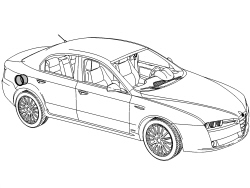
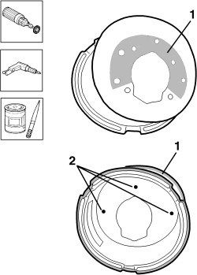
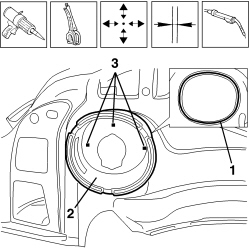
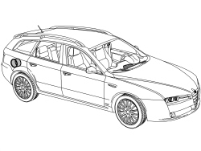
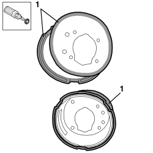
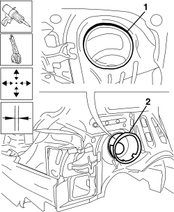

7210E72 R.R. FUEL FILLER BUSH WITH WING REMOVED
- Path
- Procedures > 72 PANELS AND FRAMES > 7210 REMOVING-REFITTING > 7210E EXTERNAL PARTS > 7210E72 R.R. FUEL FILLER BUSH WITH WING REMOVED
- Kind
- repair procedure (removal / refitting; the operation number is the code)
- Applies to
- all engines; all production periods
- Interactive page
- https://sloeber94.github.io/elrnDB/alfa/159/en/#/939011406
Applies to: all engines; all production periods
 Removing
Removing
 Refitting
Refitting- Check that the components connected are not distorted by checking the bodyshell alignment measurements using suitable equipment (gauges, templates or jigs).
- Straighten the body as necessary.

Applies to: all engines; all production periods
- Use a rotary brush to remove the paint to gain access to the spot welds.
1. Use the drill and chamfer the spot welds shown in the diagram not accessible with the chamfering machine.
- Use the hammer and chisel and remove the spot welds chamfered previously.
2. Remove the part from the vehicle, cutting the sealant shown in the diagram.

Applies to: all engines; all production periods
- Remove the spot weld residues using a disc grinder.
- Use the rotary brush and remove the sealant residues on the vehicle.
- Use a rotary brush to clean the areas treated previously.
1. Apply electro-galvanizing paint.

Applies to: all engines; all production periods
1. Remove the anti-corrosion treatment from the entire perimeter of the inside and outside of the replacement part using a rotary brush.
2. Drill the part at the points shown using the drill.
3. Apply electro-weldable paint to the edges involved.

Applies to: all engines; all production periods
Refitting
Removing1. Apply the sealant to the splining.
2. Position the replacement part correctly on the vehicle and secure it using self-locking clamps.
- Check the alignment and the surrounding gaps.
3. Use a MIG welder and weld the openings made previously in the replacement part.

Applies to: all engines; all production periods
1. Use a disc grinder to level the welds.
- Use a rotary brush to clean the areas welded previously.

Applies to: all engines; all production periods
1. Apply anti-oxidant protection to the areas involved in the welding.

Applies to: all engines; all production periods; only with equipment: Station Wagon
Removing
Refitting- Check that the components connected are not distorted by checking the bodyshell alignment measurements using suitable equipment (gauges, templates or jigs).
- Straighten the body as necessary.

Applies to: all engines; all production periods; only with equipment: Station Wagon
1. Utilizzare lo scalpello e martello e staccare il sigillante termoespandibile evidenziato in figura.
2. Remove the part from the vehicle.

Applies to: all engines; all production periods; only with equipment: Station Wagon
1. Utilizzare la spazzola rotante e rimuovere i residui di sigillante sulla vettura.

Applies to: all engines; all production periods; only with equipment: Station Wagon
Refitting
Removing1. Remove the anti-corrosion treatment from the entire perimeter of the inside and outside of the replacement part using a rotary brush.

Applies to: all engines; all production periods; only with equipment: Station Wagon
1. Applicare il sigillante termoespandibile nell’apposita scanalatura presente sulla vettura.
2. Posizionare correttamente il ricambio sulla vettura, con le pinze autobloccanti.
- Check the alignment and the surrounding gaps.

Applies to: all engines; all production periods; only with equipment: Station Wagon
- Proceed with the painting stage.